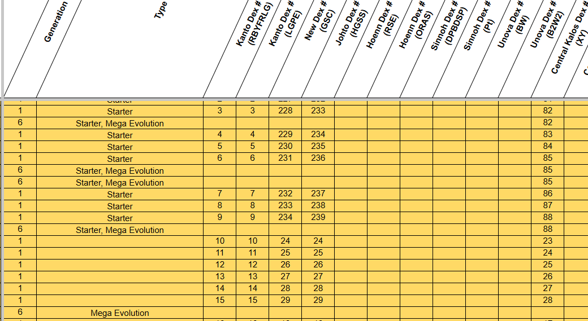
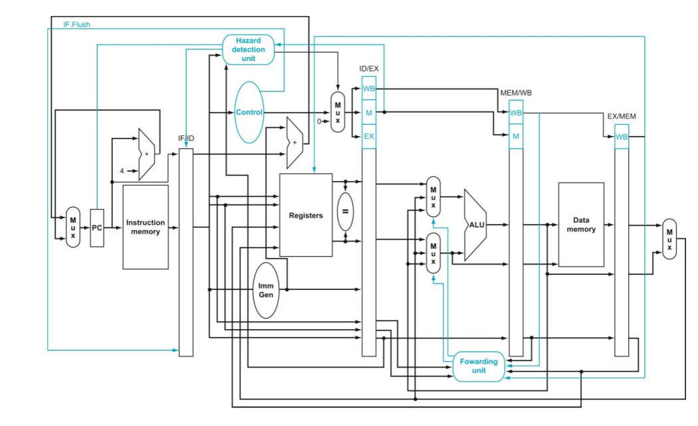
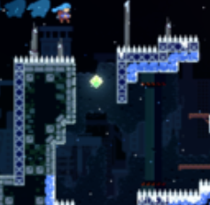

Portfolio
Course Projects
Database Development for Oriental Light and Magic Studio Animations
Built a dynamic database management system to store and process animated character data, with Python-based data visualization tools for analysis.
Skills: Systems Programming, C, Python

Pipelined Processor
Built a fully functional pipelined RISC-V processor with support for arithmetic, memory, and control-flow instructions, including hazard resolution mechanisms.
Technologies: Computer Architecture, Verilog, RISC-V

New Celeste Video Game
Collaborated with a team of three to develop an alternate version of the Celeste video game with collision detection, dynamic scoring, and customizable themes.
Technologies: Ojbect Oriented Programming, Java
